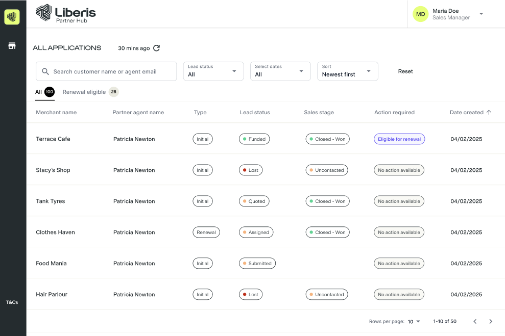
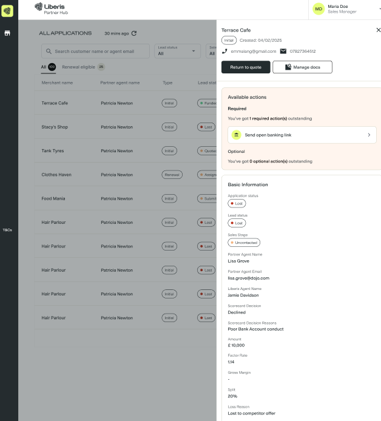
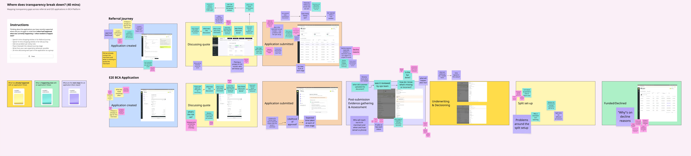
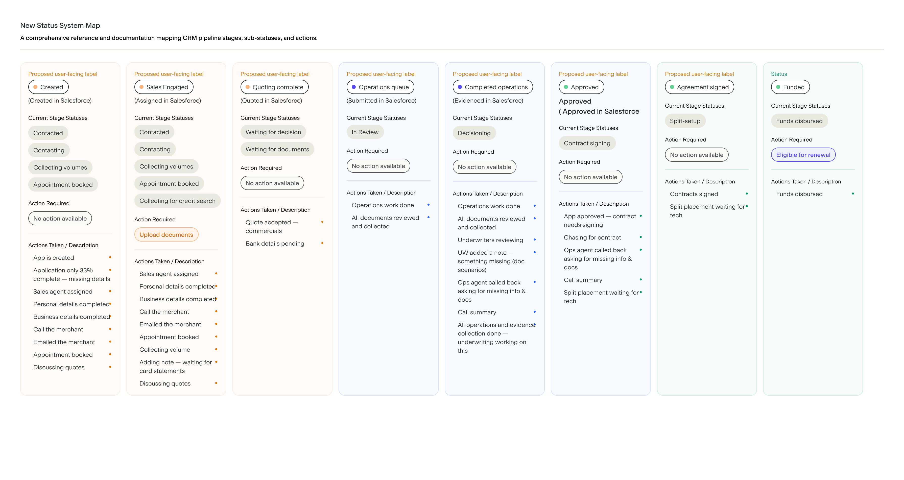
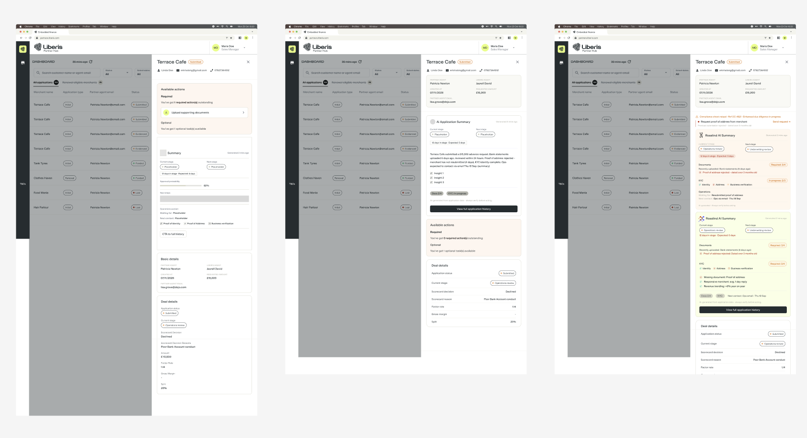
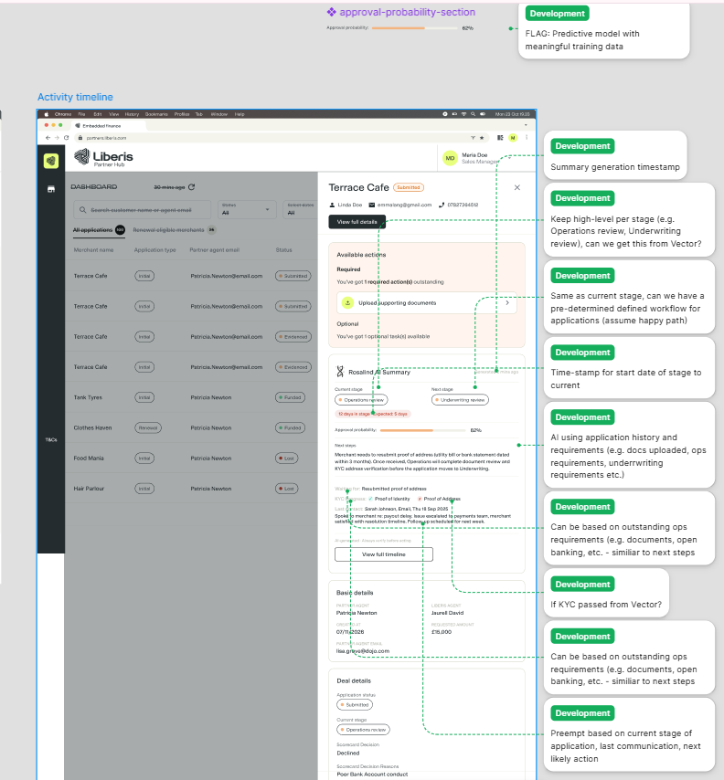
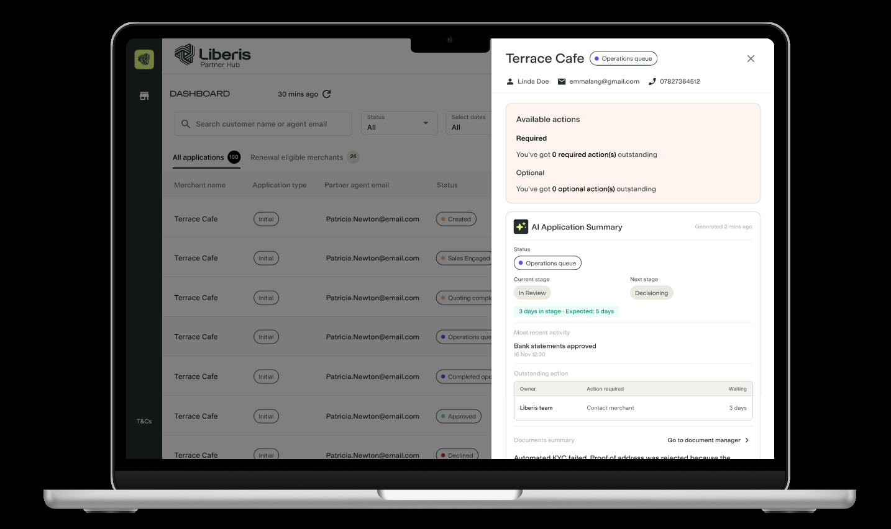
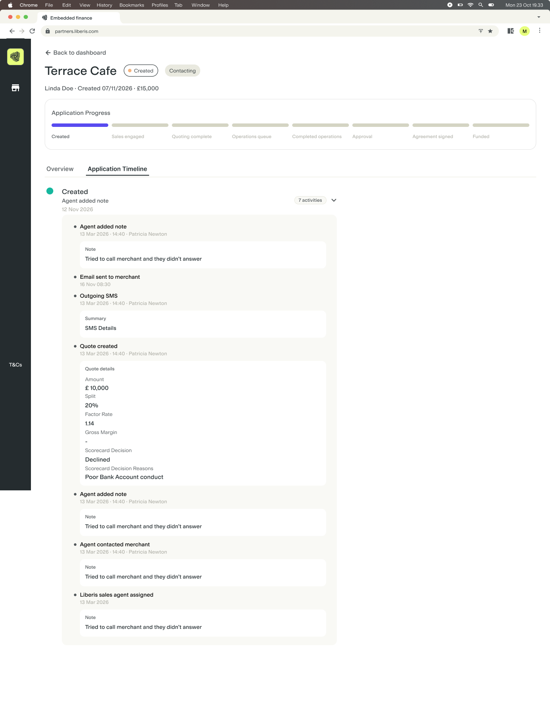
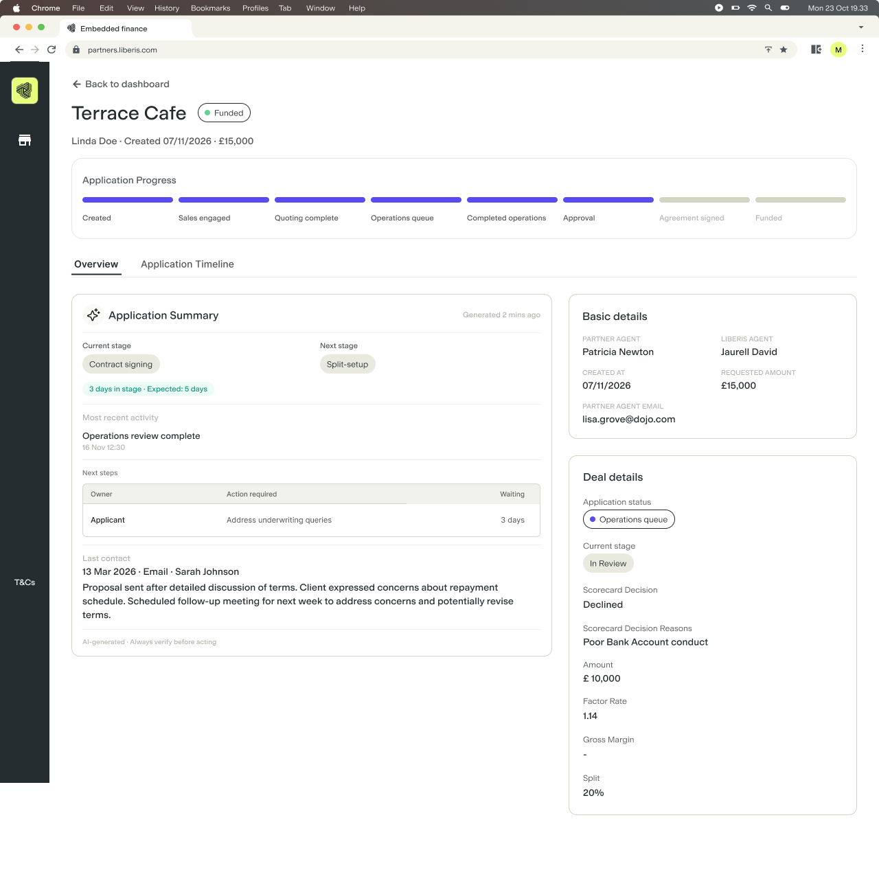
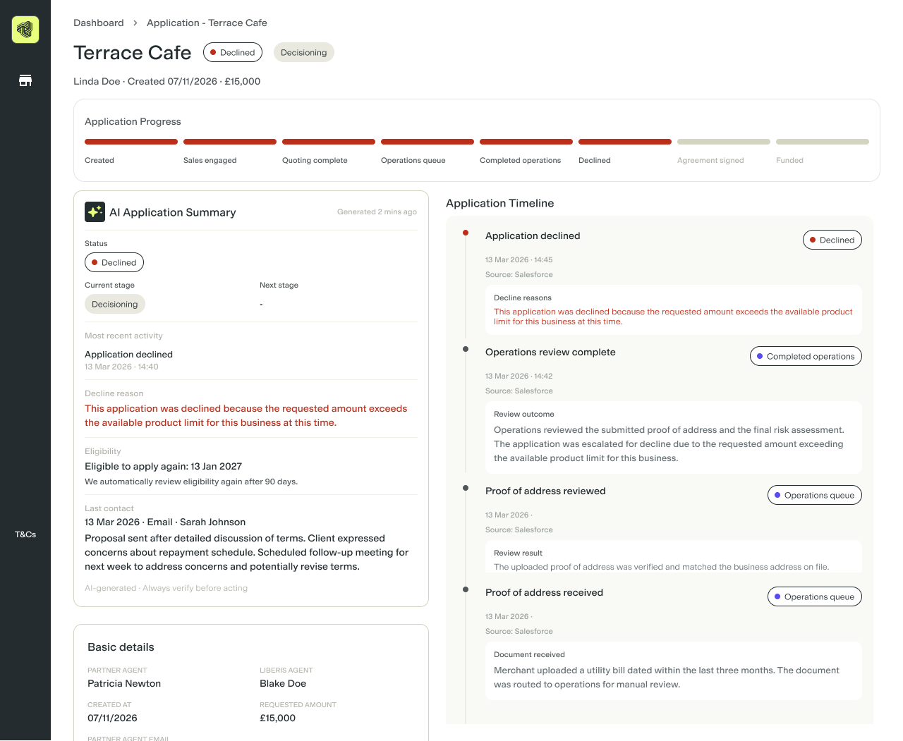

Discovery to validated design and engineering handoff
Timeline
September–October 2026
The problem
Partner agents struggled to understand what was happening inside a funding application. Existing statuses such as "Quoted" and "Submitted" were confusing or misleading because the sales-stage statuses only covered the sales stage itself and gave no information about what happened once the application was submitted. The context that would fill that gap, evidence, operational progress, merchant contact history, was spread across different systems, teams and individual updates. Agents couldn't reliably answer what had already happened, what was happening now, why an application had stopped progressing, who needed to act next, or what to tell the merchant.
What made this hard
The work arrived as a request to build an activity timeline. I reframed it as a research question instead: where does application transparency actually break down, why does it matter, and how are people already working around it? That meant running my own discovery from a relatively surface-level brief, with no existing research to build on, before I could trust that a timeline was even the right answer.
The solution and impact
I designed and facilitated a remote Miro workshop with the Partner Managers who work closest to partner agents, mapping problems against the real application journey rather than collecting a wishlist of features. Synthesis turned the raw stickies into eight evidence-backed problem themes, which I prioritised with the product manager into three connected solutions.
SolutionQuestion it answers
Updated statusesWhere is the application now?
AI application summaryWhat do I need to know or do?
Application timelineWhat has happened so far?
Engineering had already been briefed on the idea, so I developed the initial concept myself, then used Figma's AI agent to explore further directions. I tried to work out feasibility myself initially before taking it to engineering: mapping each component to data that already existed and checking whether it would hold up across different application statuses, reusing existing components wherever I could. Checking that with engineering afterwards caught a real structural problem with the timeline, which sent me back to rework it before validating the down-selected direction with the same Partner Managers group and a separate round with Operations stakeholders. That direction is now signed off and moving into engineering build.
What I learned
How important it is to really understand the problem space and involve people as early as possible. This started as a request to build a timeline. Digging into why that was being asked for, instead of accepting it at face value, is how I found out the real problem was a lot deeper than the solution in front of me.
An AI-powered summary gave me more flexibility in how application information could be brought together, but it still needed a clear structure and hierarchy. I had to design how status, activity and next actions were presented and check what was feasible with engineering.
Led discovery and designed clearer statuses, an AI application summary and an activity timeline for partner agents in Liberis Partner Hub. The direction is now validated and moving into engineering build.
Discovery to validated design and engineering handoff
Timeline
September–October 2026
Overview
Partner Hub is the platform Liberis partner agents use to manage merchant funding applications. Partner agents struggled to understand what was happening inside a funding application: existing statuses like "Quoted" and "Submitted" were confusing or misleading, because the sales-stage statuses only covered the sales stage itself and gave no information about what happened once the application was submitted. The context that would explain a stalled application was scattered across systems, teams and individual updates.

The previous dashboard showed lead status and sales stage, but left the sales stage blank for submitted applications.

The previous side panel showed actions and application details, without a summary or timeline to explain the wider context.
The work arrived as a request to build an activity timeline. I wanted to take the time first to understand the underlying need, so I could be confident a timeline would help. This moved fast: discovery and validation both happened in September 2026, with engineering build starting the following month.
Where does application transparency break down, why does it matter, and how do people currently work around it?
I owned this end to end: designing and facilitating discovery, synthesising the findings, designing and validating the three-part solution, checking feasibility with engineering, and preparing the direction for build.
WHY IT WAS HARD
Agents couldn't reliably answer basic questions about an application: what has already happened, what is happening now, why it has stopped progressing, who needs to act next, and what to tell the merchant. Any fix had to help agents answer all five clearly.
Step #1: Designing and facilitating the workshop
Partner agents themselves are mostly freelance and hard to convene as a group, so I went to the Partner Managers who work with them daily. I designed a remote-friendly, one-hour Miro workshop rather than collecting written feedback, adapting the structure from similar workshops I'd run on another project, so people could contribute and build on each other's input in real time.

The populated board at the end of the session: problems placed against every stage of both the referral and end-to-end journeys.
Step #2: Turning raw input into evidence-backed priorities
I translated the raw stickies into logical themes, then into evidence-backed problem statements and supporting user stories rather than a flat list of complaints. That synthesis surfaced eight distinct problem areas. Working with the product manager, I prioritised the strongest of these, including:
The discovery also connected to earlier drop-off work on the platform, particularly the need to detect existing applications and understand merchant history without creating duplicates, so the direction I took forward fit the wider system rather than solving this problem in isolation.
A closer look at the Miro synthesis: the problem statements and supporting user stories I put together from the workshop findings.
I focused the work on three connected improvements, each answering a different question for agents.
Clearer application statuses — Where does the application stand?
AI application summary — What do I need to know or do?
Application timeline — What has happened so far?
Step #3: Making application statuses clearer
I updated two separate parts of how application progress was shown.
Application status: I made the overarching labels clearer. "Assigned" became "Sales Engaged" and "Quoted" became "Quoting complete." "Submitted" was shown as "Operations queue," while "Evidenced" was shown as "Completed operations." Each label mapped back to its underlying Salesforce status.
Current stage: The separate "Sales stage" field described progress within an application status, but went blank after submission. I renamed it "Current stage" and added two new post-submission stages: "In Review" for applications in the operations queue, and "Decisioning" once operations were complete. This gave agents more detail about what was happening after submission.

I mapped every proposed status back to its Salesforce equivalent, sub-statuses and required actions, so the redesign stayed traceable to the system underneath it.
Step #4: Developing the AI application summary
The summary needed to bring together the context agents otherwise had to piece together by hand: what was happening, what was blocking progress and who needed to act next.
I scoped the summary around current status and stage, last meaningful activity, current blocker and outstanding evidence, owner and next action, and previous merchant contact. Agents could compare the summary with the activity timeline to check the details behind it.
IN THE DESIGN PROCESS
I developed the initial concept myself, defining the information the summary needed to include. From there, I used Figma's AI agent to rapidly expand on that concept, explore more directions and test different ways of structuring the information. I stayed responsible for defining and refining the problem, writing the user stories, directing the exploration, evaluating the outputs, applying the design system, and deciding which concepts progressed.

Early explorations, not the final design: testing a structural placeholder, generated summary text, and more explicit document and KYC information.
Checking feasibility with engineering
The product manager had already briefed engineering on the idea, so I tried to work out feasibility myself initially before taking the concepts to them. I mapped each component I was designing, the application summary especially, to data that already existed, checked whether it would hold up across different application statuses rather than just the happy path, and looked for existing components I could reuse and repurpose instead of designing new ones from scratch.
I then checked those assumptions with engineering before developing the designs further. We discussed:
Whether the required data already existed, or would need to be derived
Whether the summary could update dynamically for each application
Whether existing components, including status pills, could be reused
How the statuses, summary and timeline could avoid duplicating one another
Compliance, access and disclosure constraints

An early annotated concept, where I flagged the specific data and workflow questions each part of the design depended on, before taking it to engineering.
The final summary brings status and stage, recent activity, ownership and outstanding work into a structured side-panel view. I checked it across the full range of application statuses, from Created to Funded, as well as specific edge cases.

The final summary design, shown for an application in the operations queue.
A DELIBERATE LIMIT
The AI summary reduces the effort needed to interpret fragmented application data, but it deliberately doesn't replace the underlying status or activity history. Agents can click through to view the full timeline and check the activity behind the summary.
Step #5: Refining the timeline and page structure
While researching examples, I looked at deal trackers and overview pages that made progress through a journey easy to scan. This inspired the application progress bar at the top of the page, giving agents a visual reference for where an application stood and which statuses came next.
The timeline provided the detail behind that progress: submissions, evidence, contact, handovers and status changes.

The earlier timeline grouped activity under the application's current category, with a collapsed count of how many events sat inside it.
RETHINKING THE TIMELINE STRUCTURE
I'd initially grouped timeline activity under application statuses such as Created, Assigned and Quoted. With the progress bar also showing those statuses, I felt the two were too easy to confuse: the timeline categories looked like another way of tracking progress.
Engineering also pointed out that grouping events by status could obscure their chronological order, because an application can move backwards between statuses. An event might move it from Assigned to Quoted, while a later event sends it back to Assigned.
Both considerations led me to a flat, chronological list. Each entry carries its own timestamp and the status it belonged to at that moment. The progress bar shows where the application stands and what comes next; the timeline records what happened and when.
Bringing the timeline into the application view
The page structure went through its own iteration too. Earlier versions gave the timeline a full page of its own, with "Overview" and "Application Timeline" as separate tabs.

The earlier full-page Overview repeated information from the side panel, which led me to reconsider its role as I walked through the design.
Walking through the design from a partner agent's perspective, I felt the full-page Overview repeated too much of what was already available in the side panel. I moved the timeline into the same view as the summary and other details, and repurposed the existing full-page Document Manager into the new Overview, with Document Manager available as a tab alongside it.

All three solutions together on a declined application: the progress bar for where it stood, the AI summary for what happened and why, and the timeline underneath for the full record.
Step #6: Validating the direction
After the engineering review, I continued iterating on the designs using Figma's AI agent and aligned with the product manager on a single direction. I then returned to the same Partner Managers group from discovery, and ran a separate round with stakeholders from the Operations team, to check the direction against the real problems.
Outcome
The design has been validated with stakeholders and signed off with the product manager, and is now moving into engineering build. This is a meaningful outcome even before launch: the work moved from an ambiguous, feature-shaped request to a researched, prioritised, technically reviewed and validated product direction. It also created a clearer shared model for application progress across Product, Design, Engineering and Partner teams.
The complete proposed experience: application progress, the AI summary and the full activity timeline.
WHAT I'LL CHECK AFTER LAUNCH
After launch, I'd like to check whether internal teams receive fewer application-status queries and arrange feedback sessions with partner agents, or gather feedback through Partner Managers, to understand how useful the changes are in practice. I'd also look to track clicks from the AI summary into the full timeline to see how often agents seek more detail.
What I learned
How important it is to really understand the problem space and involve the right people as early as possible, rather than starting from whatever solution is handed to you first, whether that comes from a stakeholder or from what an AI tool suggests. This project arrived as a request to build a timeline. Digging into why it was being asked for, instead of accepting it at face value, is how I found out the real problem was a lot deeper and wider than the fix in front of me, and bringing in Partner Managers and Operations early is what let me catch that before it shaped the whole design.
I also learned that an AI summary still needs careful information design. I couldn't leave it to AI to produce a block of text and expect agents to find what mattered. I needed to define the structure and hierarchy: where status and stage sit, how recent activity is presented, and how ownership and next actions stand out. AI could help explain the application, but that structure made the explanation useful.
Knowing the application summary would be powered by AI gave me more flexibility to imagine how information could be brought together and structured around what an agent needed to understand. That opened up more possibilities for the experience, while I still needed to define a clear hierarchy and check what was feasible with engineering.